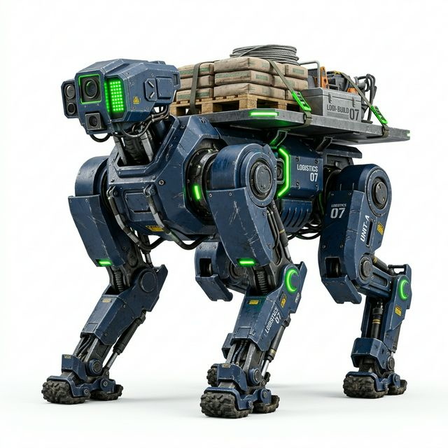

COBOT-Quad Patrol
초정밀 동적 밸런싱이 접목된 4족 보행 순찰 로봇. 360도 3D LiDAR를 활용해 깜깜한 밤중에도 공장 외곽의 지도를 작성하고 순찰합니다.
| 최대 등판능력 | 30도 경사, 25cm 단차 |
|---|---|
| 최고 주행속도 | 3.3 m/s |
레인보우로보틱스의 완전한 보행 모터 제어 이데올로기와 COBOT의 강력한 방탄 쉘 프레임이 결합. 험준한 지형이나 인간의 발길이 끊긴 재난 지역에 자유롭게 배치 가능한 고도로 지능적인 전방위 모빌리티 솔루션입니다.
기존 바퀴형 로봇(AMR)이 멈춰서는 단차와 험지에서부터 사족보행의 진가가 드러납니다.
V-SLAM 맵핑 알고리즘과 외부 장착된 열화상 레이더를 통해 유독 가스 누출, 고압 전류 이상 스파크, 야간 침입자를 사전에 자율적으로 예지하고 방어합니다.
일반 차량 진입이 불가능한 폭파 현장 부근이나 산악 지대에서, 병사나 구조 대원을 대신하여 탄약 및 의료 구호 물품 수십 킬로그램을 등에 싣고 신속 전개합니다.
평탄화되지 않은 진흙탕 바닥이나 자재가 어지럽게 널브러진 건축 공사장에서 모래 포대나 시멘트 자재를 이송하여 현장 산재 발생률을 제로에 가깝게 만듭니다.
초정밀 동적 밸런싱이 접목된 4족 보행 순찰 로봇. 360도 3D LiDAR를 활용해 깜깜한 밤중에도 공장 외곽의 지도를 작성하고 순찰합니다.
| 최대 등판능력 | 30도 경사, 25cm 단차 |
|---|---|
| 최고 주행속도 | 3.3 m/s |

방탄 처리된 특수 장갑 및 두꺼운 관절 모터를 장비한 수송 전용 모델. 물체가 흔들림 없이 평형을 유지하도록 짐칸 짐벌 알고리즘이 내장되어 있습니다.
| 등 탑재 하중 | 100 kg 무적 수송 |
|---|---|
| 발바닥 지지구 | 험지 뻘 및 자갈 특화 장비 |